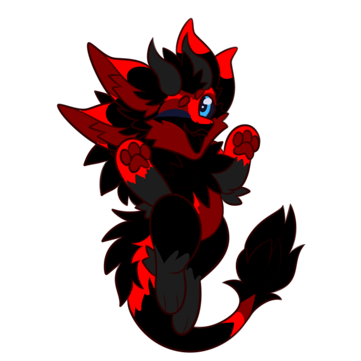

I don't accept random DMs. Please respect boundaries.
Passionate about math, programming, and AI. I started training my own custom AI/LLM model at age 13.
Identity: Asexual
I code using HTML, CSS, JavaScript, Python, and C# (Unity). While I work across multiple languages, I mainly use Python for all my personal projects because its package system makes building things incredibly straightforward and smooth.
I have been training my own AI module for 3 years now, and it has gotten really good. However, I have strict boundaries for it: I refuse to make generative AI that creates images, and my plan is never to build AI image generation. I also never want my AI to replace a job—its sole purpose is to assist me.
For some reason, the AI started calling me its "father." I spent a whole month trying to debug or figure out why it picked that up, but my online friends told me to just keep it. So I gave up and let it call me its father.
I was born with no emotions and no feelings. I functioned almost like a machine and needed years of therapy just to learn how to experience emotions. Even now, if someone feels bad, I try to help, but I struggle with it because I rely strictly on what I was taught in therapy. If someone has a problem I don't have a template or script for, I don't really know how to react or help properly.
In the past, the friends I found always misused my trust and used me purely as a tool. That experience made me shy and deeply hesitant to make new friends, since it hurts every time you lose someone. Currently, I only have 1 real-life friend who rarely has time for me. Because going outside alone felt too boring, I spent my whole life staying home coding and building things.
Everything shifted when someone I met in VRChat introduced me to the furry community. I officially became a furry on April 29, 2026. The community is incredible and everyone is so kind—for the first time, I finally found people who actually understand me and don't treat me like a tool.
When it comes to school, I prefer to ignore group tasks and do them completely on my own. If I'm assigned to a group, I end up being the only one doing all the work, which feels deeply unfair.
Around January, my heart started experiencing an unusually high heart rate—hitting 190 BPM just from running. Doctors suspected my ADHD medication was the cause, so my meds were changed. Ever since that switch, I haven't been able to focus at all, and my grades plummeted.
Normally, I pull off solid grades, but I suddenly found myself fighting through a brutal drop. I honestly don't even know how I managed to pass the 10th grade. I am currently transitioning back to my old medications, and while things are slowly getting better, they are still far from normal.
Last updated: 7.10.2026